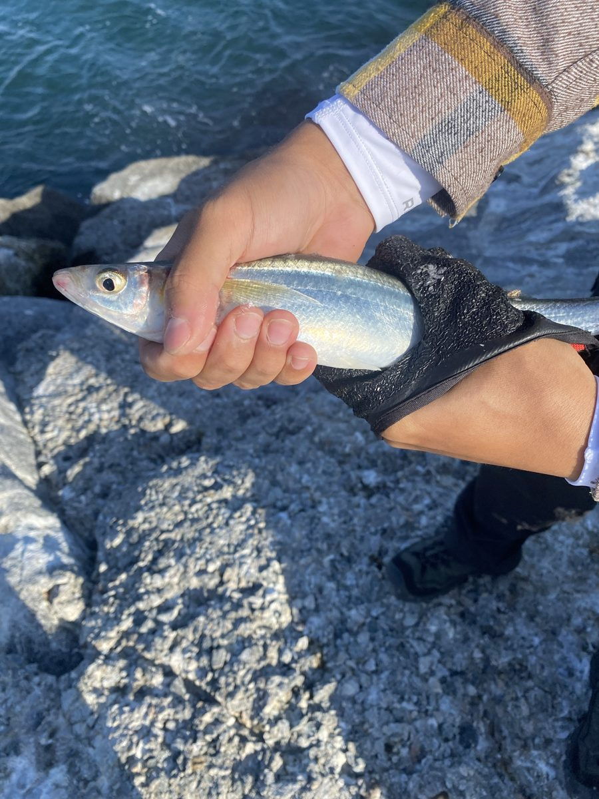
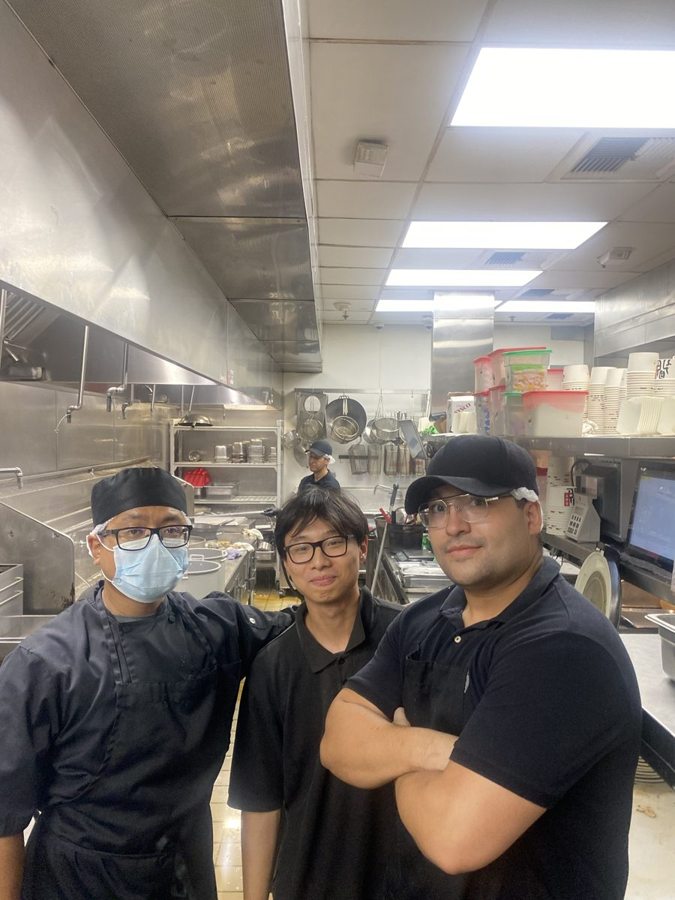
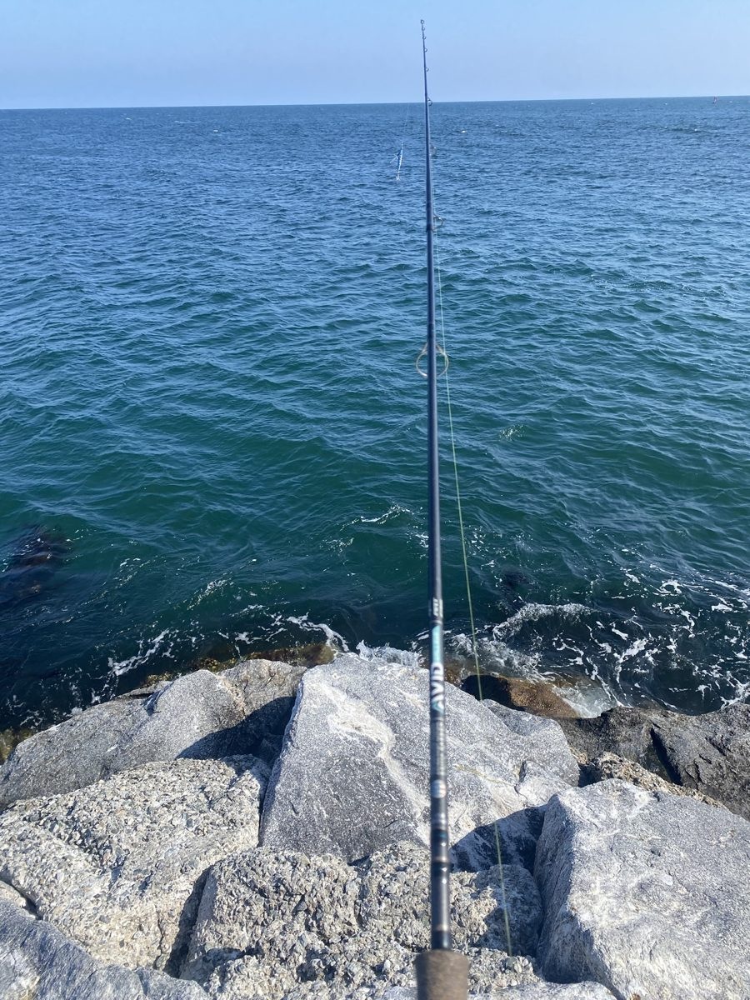

Skateboarding
You try the same trick a hundred times, change one small thing, and eventually it lands. That's exactly what debugging feels like.
It's also how I meet people. At the skatepark nobody cares where you came from, only whether you got back up.
Fishing
Fishing is the opposite of a dinner rush. You get there early, cast, and wait. It's one of the few times I can go hours without looking at a screen, and I'm usually fine if nothing bites.




Hiking
When school, work, and research pile up, I go for a hike. Being outside with friends, a little out of breath, clears my head better than anything else I've found.
Cooking
Four years on the line, from a small curry shop to the wok at Din Tai Fung. Now I mostly cook for friends. The knife skills never left.
Read how the kitchen shaped me in my story.

Anime
After a long shift or a long problem set, I put on an episode. Here are a few favorites if you're looking for something to watch.
[Title]
[One line on why]
[Title]
[Episode / thoughts so far]
[Title]
[Your pick for someone new to anime]